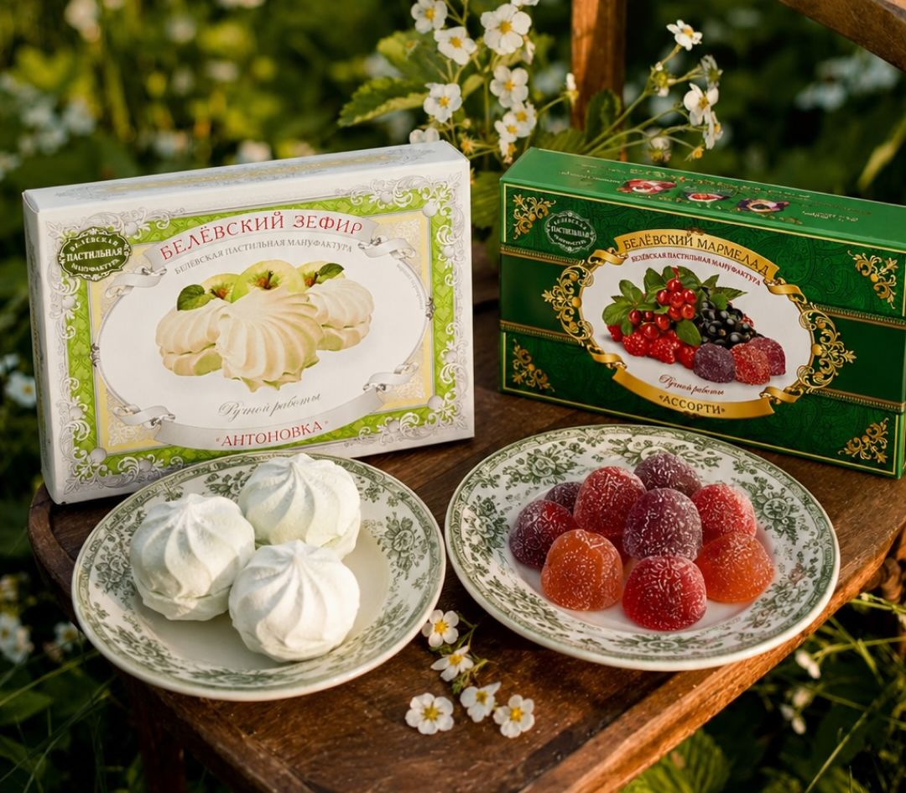

Печёная антоновка, яичный белок и неделя в русской печи. Рецепт 1881 года, с которым мануфактура выходит в Европу и Китай.
Для сетей и дистрибьюторов

Белёвскую пастилу выпускают в Белёве, небольшом городе Тульской области. Отсюда её везли в Тифлис, Варшаву и Ригу ещё в XIX веке.
Made in Belev, Tula region, since 1881.Яблоки, яичный белок, сахар или ягоды. Есть линейка без добавления сахара: яблоки и белок.
Apples, egg white, sugar. A no-added-sugar range too.Яблоки печём сами, пласты сушим в русской печи XIX века, досушиваем 12–24 часа.
Baked, whipped, layered and slow-dried in a 19th-century stove.Поставляем пастилу, зефир, мармелад, меренги и смокву. Делаем продукцию под вашей маркой. Встречаемся на выставке «Продэкспо» в Москве.
Полная линейка, разные фасовки: от 35 г до подарочных коробок.
Пастила, зефир и мармелад по нашему рецепту с вашей упаковкой.
Интернет-магазин для покупателей в Европе.
Стенд мануфактуры в Москве, павильон 7.
Концепт 7 из 7, свой. Переводы на EN, DE и 中 – черновые, для показа идеи; перед запуском нужен переводчик.